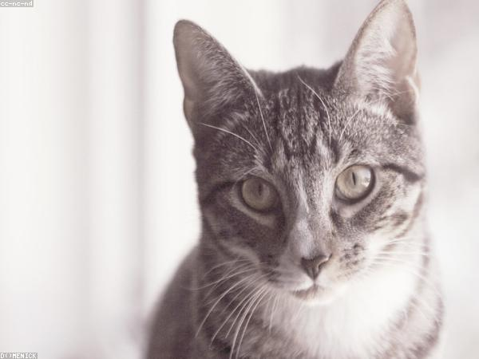
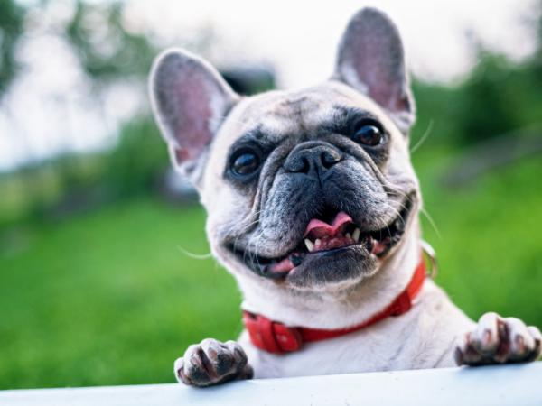
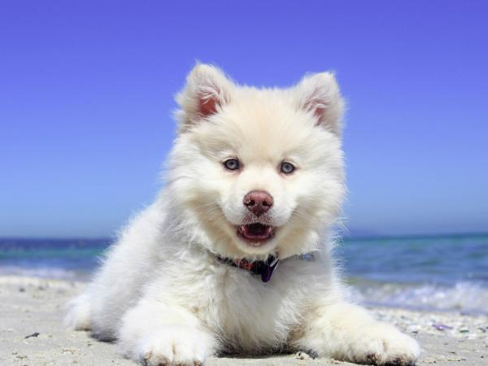
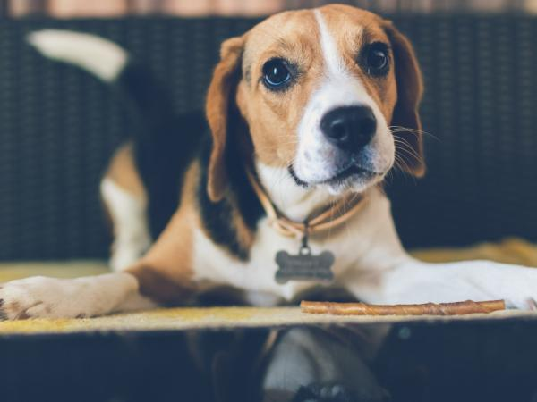
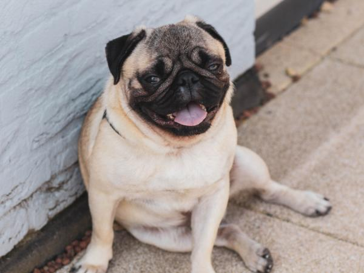
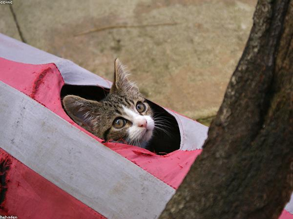
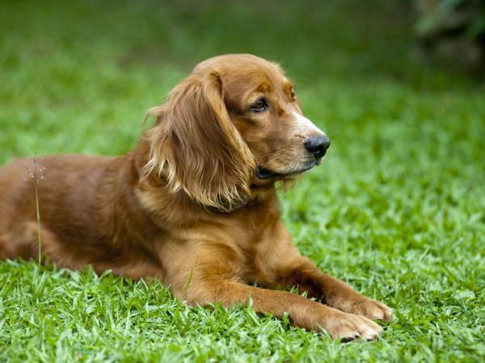

-
 2 km
2 km
Toby
Chacao · Luis García
-

3 kmNala
La Candelaria · Lunita Rescates
-

4 kmRocky
Los Palos Grandes · Daniela Bracho
-

6 kmKira
Baruta · Luna Martínez
-

7 kmBruno
El Hatillo · Pedro Ramírez
-

9 kmCoco
Petare · José Gutiérrez
-

12 kmSimón
Los Teques · Luna Delgado
-

18 kmMax
Guarenas · Valentina Ochoa